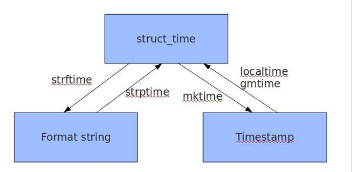

下面是Python的一些常用内置模块简单使用示例, 主要包括:
- 文件操作模块 os, glob, shutil
- 时间模块 time 和 datetime
- 序列化模块 pickle 和 json
- 哈希算法模块 hashlib 和 hmac
- 数据结构模块 collections
- 随机数模块 random
- 字节流转换模块 struct
- 系统信息模块 psutil
1. os, glob, shutil
1 | import os |
2. time, datetime
time module
转换图示

代码实例
1 | # timestamp, struct_time, format_time |
datetime module
1 | import time as ttime |
3. pickle, json
pickle module
1 | import pickle |
json module
1 | import json |
Note: json支持的数据类型为None, bool, int, float, str以及这些类型数据的list, tuple and dict
4. hashlib, hmac
1 | import hmac |
5.collections
namedtuple
1 | from collections import namedtuple |
deque
1 | from collections import deque |
defaultdict
1 | from collections import defaultdict |
OrderedDict
1 | from collections import OrderedDict |
Counter
1 | from collections import Counter # dict的子类 |
6. random
1 | import random |
7. struct
1 | import struct |
8. psutil
1 | # CPU信息 |